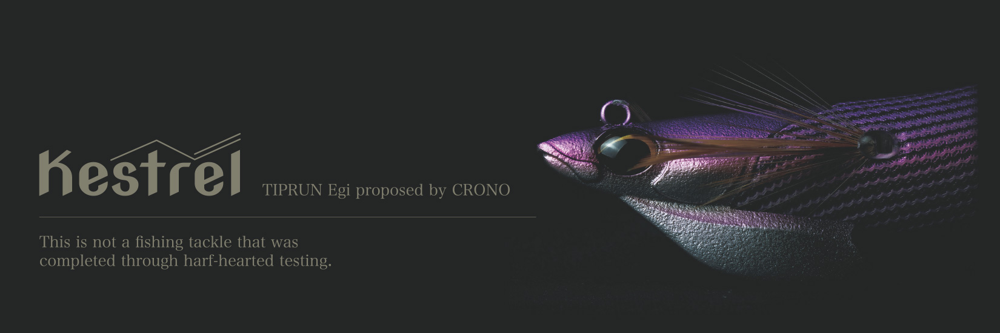
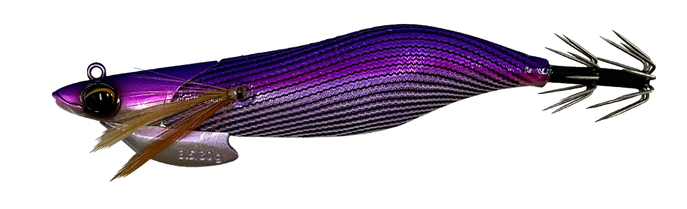
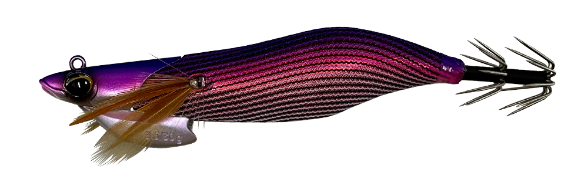
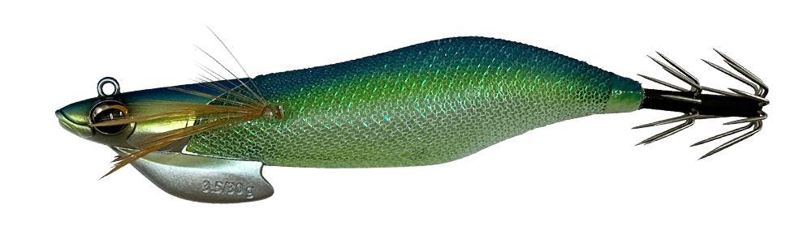
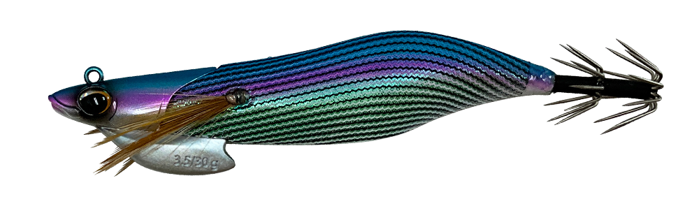
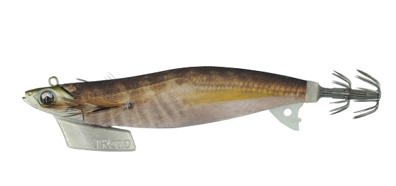
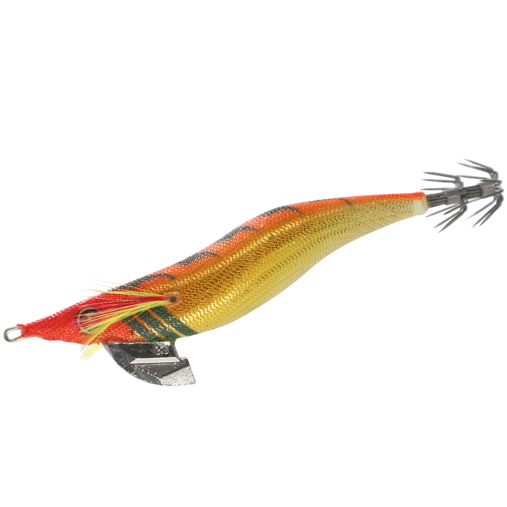

ケストレル
（Kestrel）
ケストレル（Kestrel）はCRONO（クロノ）のティップランエギです。
「売るため」ではなく「釣るため」を掲げて作られたエギで、瞬間的な姿勢安定と、水圧に負けないキレのあるダートが最大の魅力です。

画像出典:CRONO公式HP
スペック
- メーカー
- CRONO（クロノ）
- タイプ
- ティップランエギ
- サイズ
- 3.5寸
- 重さ
- 30g
- カラー
- 全10色
- 推奨シンカー
- ヤマシタ エギ王 TRシンカー
- ターゲット
- アオリイカ
- 価格
- 1,870円（税込）
▼今すぐチェック

ケストレルの特徴
姿勢の安定とダートのキレを追求した、「釣るため」のティップランエギ
-
ダートの基準を作るヘッド
ヘッドは姿勢を安定させるためだけでなく、「釣るため」のバランスを作る部分。ダートの基準になる初期のロールアクションを生み出している。
-
ミリ単位で調整した背面
背面のフラット部は、大きさや角度をミリ単位で調整。開発者も詳細を明かしていない部分で、ボディ全体も海の中にあることを考えた形状に仕上げている。
-
瞬間的に掛けるストレートフック
フックはストレートタイプで、瞬間的なフッキングを狙える。2026年9月生産分からは、フックの素材も変更されている。
ケストレルの使い方
ボートのティップランで、底を取ってからシャクってダートさせ、止めてアタリを待つのが基本です。
シャクリのあとのステイで姿勢が決まった瞬間を意識し、穂先の小さな変化に集中すると、アタリを取りやすくなります。潮が速くて底が取りにくい時は、推奨のエギ王 TRシンカーを足して調整しましょう。
ケストレルの得意な状況
ボートのティップランで、潮に負けずにダートのキレを出したい場面が出番です。
水圧が掛かる状況でもダートさせたい時や、動きの違いで反応を変えたい時に試したい1本です。
ダートから素早く姿勢が安定するので、ステイで抱かせて釣れるチャンスを作りやすいエギです。
ワンポイント
アクションのキレを高く仕上げているため、ロッドや潮圧、シンカーの付け方によってはフックにラインが絡むことがあります。
絡む時は、公式の案内どおりシャクリを少し弱めるか、ドラグを弱める方向に調整してみましょう。
人気カラー
ケストレルは全10色展開。人気カラーを紹介します。

ポイズンシリーズの1番カラー。ケストレルらしさを試すならまずこの色から。

毒リンゴ名前のとおり毒々しい配色で、存在感を出したい時に。

UV 爽快ミント腹部グロー・全体ケイムラ仕様。光量が少ない時間帯にも使いやすい。

パンドラの箱腹部グロー仕様。朝夕など、見せて誘いたい時に。
画像出典:CRONO公式HP
▼今すぐチェック
ケストレルに似ているルアー
-

エギ王TR ヤマシタ 詳細はこちら＞ティップラン専用エギの定番。3号（21g）と3.5号（27g）があり、ピタッと止まる安定したスイムでアタリを誘える。
-

スクイッドジャンキー ライブリーダート ハヤブサ 詳細はこちら＞2.5号・3号・3.5号のダートタイプのエギ。キレのあるダートで誘う点が近い。
-
 エギ王Kディープ
ヤマシタ
詳細はこちら＞
エギ王Kディープ
ヤマシタ
詳細はこちら＞
全長90mm・重さ19gのディープタイプ。ボートではなく、ショアから深場を狙いたい時の選択肢に。